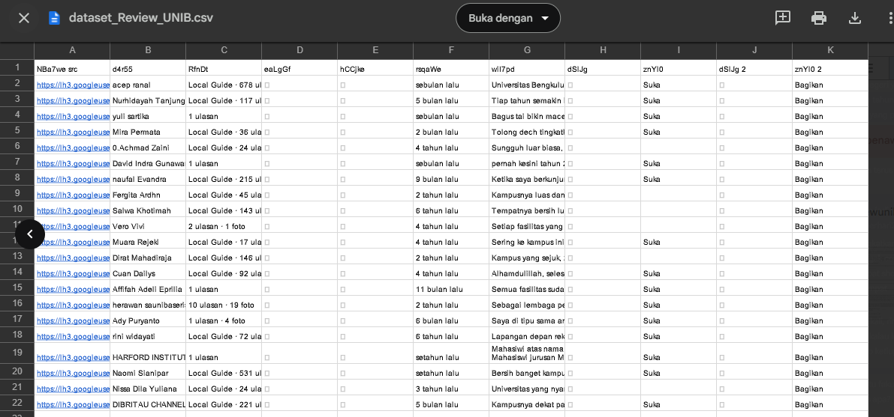

The data used comes from scraped user reviews on Google Reviews for Universitas Bengkulu. A total of 372 entries were obtained, containing various columns such as user names, review dates, ratings, and review comments.
As is common with scraped data, this dataset contains a lot of noise and irregular structure. Therefore, a cleaning process is necessary to prepare the data for further analysis.
Below is a preview of the scraped dataset before the cleaning process:
Issues Identified:
dSlJg, znYl0, NBa7we src, and
others.To ensure the data is ready for analysis, the following cleaning steps were carried out:
d4r55, znYl0, eaLgGf, hCCjke, RfnDt,
dSlJg, dSlJg 2, znYl0 2
rsqaWe → Year, wiI7pd → Review
Below is a preview of the dataset after the cleaning process:
Next, the cleaned data will be managed in Google Colab for exploratory data analysis (EDA) and further modeling.